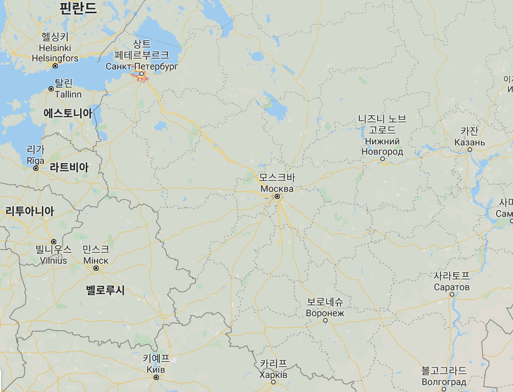
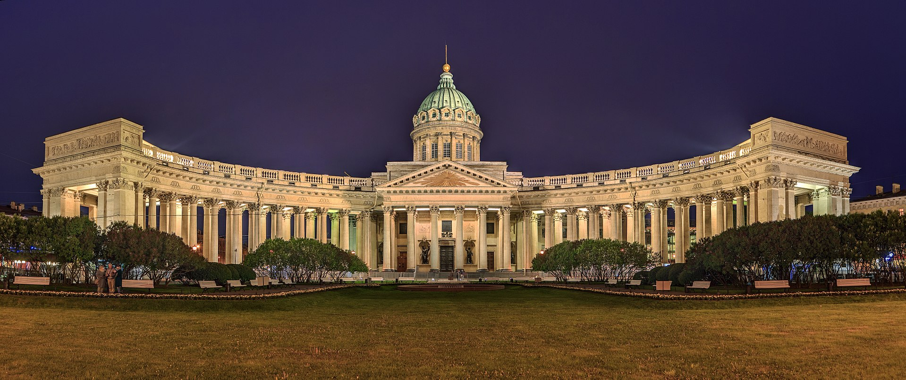
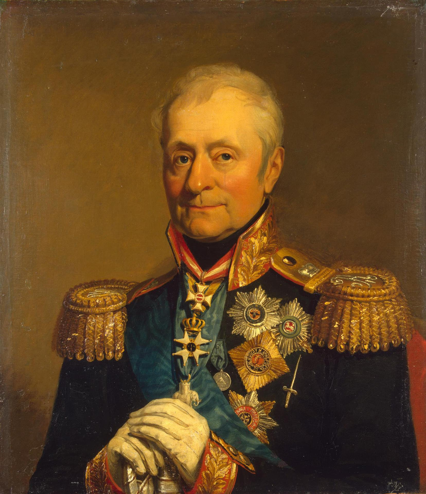
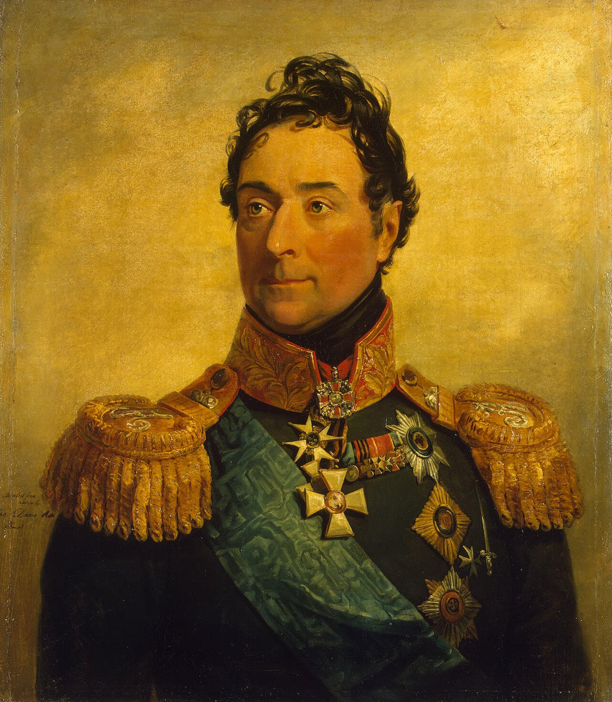
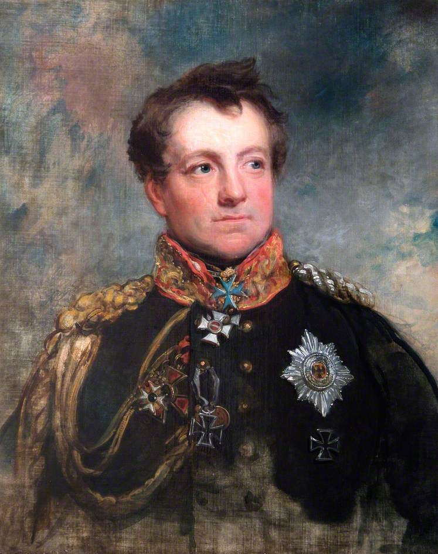

1812년 나폴레옹을 기다리는 러시아군의 내부 사정 (제1편)
게시: 2019-10-28T06:30:38+09:00
나폴레옹의 수십만 대군이 온갖 말썽과 이야기꺼리 속에 착착 네만 강 서쪽에 집결하는 동안, 알렉산드르와 러시아군은 뭘하고 있었을까요 ? 나폴레옹의 침공에 대비하여 모스크바의 성벽을 강화하고 있었을까요 ? 일단, 로마노프 왕가의 왕궁은 모스크바가 아니라 상트-페체르부르크(Sankt-Peterburg, Санкт-Петербу́рг)에 있었습니다. 1712년 표트르(Pyotr) 대제가 모스크바였던 수도를 상트-페체르부르크로 바꾼 것이었지요. 당시 인구수도 모스크바와 상트-페체르부르크가 각각 30~40만 정도로 비슷비슷했습니다. 그러니까 나폴레옹이 모스크바를 최종 목표로 삼은 것은 거기가 러시아의 수도이거나 가장 큰 도시이기 때문이 아니라, 그 역사적인 지위와 함께 모스크바의 지리적 위치가 러시아 제국의 심장부에 해당하기 때문이었습니다. 로마노프 왕가를 모조리 사로잡고 싶다면 모스크바가 아니라 상트-페체르부르크로 가야 했습니다만, 거긴 제국의 북쪽 한구석에 불과했습니다. 나중에 나폴레옹이 모스크바를 점령할 때, 로마노프 왕가 사람들도 바리바리 봇짐을 머리에 얹고 피난을 떠나지는 않았는데, 그 이유는 그들은 저 북쪽의 상트-페체르부르크에 있는 왕궁에서 아주 편안하게 있었기 때문이었지요.

(모스크바의 위치를 보시면 왜 나폴레옹이 상트-페체르부르그가 아니라 모스크바로 향했는지 쉽게 이해가 가실 것입니다.)
그런데 그 편하고 안전한 상트-페체르부르크의 카잔 성모 성당(Cathedral of Our Lady of Kazan, Kazanskiy Kafedralniy Sobor)에서 1812년 4월 9일 예배를 드린 알렉산드르는 남쪽으로 길을 떠납니다. 목적지는 리투아니아의 수도인 빌나(Vilna, Vilnius)였습니다. 빌나에는 러시아 야전군의 총사령부가 있었습니다. 나폴레옹과 대치한 러시아 야전군은 크게 2개로 나뉘어 있었습니다. 주력부대는 바클레이 드 톨리(Michael Andreas Barclay de Tolly) 장군이, 그리고 더 남쪽의 보조부대는 그루지아의 상남자 바그라티온 장군이 지휘했습니다. 생각해보면 좀 묘한 일이긴 했습니다. 러시아는 나폴레옹이라는 대영웅이 유럽 역사 통틀어 사상 최대의 대군을 이끌고 침공하기 직전이라는 백척간두의 위험에 놓여 있었습니다. 그런 와중에 러시아를 지켜낼 군대의 우두머리가 하나는 독일계 장군이고, 다른 하나는 그루지아계 장군이었던 것입니다. 바그라티온은 러시아 공녀와 결혼하여 러시아화된 사람이라고 치고, 여기서 문제가 된 것은 독일계인 바클레이 드 톨리였습니다.

(상트-페체르부르그의 카잔 성모 성당입니다. 왜 하필 카잔이라는 지방 도시 이름이 붙었는지 찾아보니, 원래 콘스탄티노플에서 왔다는 전설 속의 성모 마리아의 성상(icon)과 관계가 있더군요. 카잔의 성모 마리아는 러시아 전체의 수호 여신에 해당하는 그런 위치라고 합니다.)
(모스크바에 보존된 카잔 성모 성상의 복제본입니다. 콘스탄티노플에서 왔다는 원본은 사라졌다고 하네요.)
정확하게 보자면 바클레이 드 톨리는 독일계는 아니었고, 이름에서 알 수 있듯이 원래는 스코틀랜드 가문 출신이었습니다. 그러나 어쨌거나 꽤 오랜 시간 동안에 걸쳐 발트 해 연안 독일계 귀족들 사이에 정착하면서 바클레이 드 톨리도 독일어를 모국어로 하는 부모 사이에서 태어났습니다. 그런데 바클레이 드 톨리가 사실상의 러시아군 총사령관을 맡게 된 것은 결코 우연이 아니었습니다. 유럽 귀족들이 전통적으로 다 그렇긴 했지만, 특히 러시아 귀족층은 교육 따위에 그다지 열성적이지 않았습니다. 덕분에 어떤 분야든 좀 전문성이 필요하고 잉크와 펜대를 쥐어야 하는 일에는 오늘날 발트해 연안의 에스토니아-라트비아 지방에 정착하여 로마노프 왕가에 충성하면서 살아온 독일계 귀족들이 많이 등용되었습니다. 군대도 마찬가지였습니다. 러시아군 장교직은 100% 귀족층에게만 주어졌는데 특히 독일계 귀족들의 비중이 매우 컸습니다. 가령 나폴레옹에게 사실상의 첫 패배를 안겨주었던 1807년 2월 아일라우(Eylau) 전투를 지휘했던 베니히센(Levin August von Bennigsen)은 아예 중부 독일인 하노버(Hanover)에서 태어난 독일계 귀족이었습니다.

(베니히센입니다. 그는 바클레이 드 톨리 같은 발트해 연안 지역의 독일계 귀족이 아니라, 독일 본토인 하노버에서 태어난 그냥 독일인이었습니다. 하노버 군에서 대위 계급까지 장교 경력을 쌓은 그는 28세이던 1773년에 러시아군에 '채용'되어 터키와의 전쟁 때문에 유능한 장교가 필요하던 러시아군에서 복무하게 됩니다. 5년 후인 1778년에 겨우 중령으로 승진한 것을 보면 독일 귀족 출신이라고 아주 각별한 특별 대우를 받은 것은 아닌 것 같습니다.) 이런 독일계 지휘관에 대해서 러시아계 부하들이 잘 따라준다면 문제가 없었겠는데, 문제가 있었습니다. 그것도 아주 많았습니다. 당시 러시아는 나폴레옹의 침공이라는 미증유의 위기를 맞이하여 반프랑스 감정이 들끓고 있었고 그에 따라 전에 없던 민족 감정이라는 것이 새록새록 생겨나고 있었습니다. 그런 상황에서 역시 외국인임에 틀림없는 독일인들이 장군이네 지휘관이네 하며 군을 통솔하고 있는 것이 러시아군 장교들에게 곱게 보일 리가 없었습니다. 특히 언어적인 문제가 아주 컸습니다. 러시아군에는 프랑스 대혁명을 피해 러시아로 망명한 프랑스 망명귀족 출신의 장교들도 꽤 많았습니다만, 적국 출신이던 이들에 대한 반발심은 오히려 없었습니다. 일단 이 프랑스 망명귀족들이 나폴레옹과 혁명 프랑스군에 대해 이를 갈고 있기 때문이기도 했지만, 언어 문제가 컸습니다. 당시 유럽에서는 프랑스어가 귀족층의 국제 관계에 있어서 사실상의 표준어처럼 받아들여졌습니다. 그런 경향은 유럽의 중심인 파리에서 가장 멀리 떨어진 러시아에서 특히 강해서, 러시아 귀족들은 집집마다 프랑스 출신의 가정교사를 두었고 아이들이 가끔 집에서 러시아어로 이야기할 경우 야단을 치는 경우조차 있었습니다. 그러다보니 거의 모든 러시아 장교들은 프랑스어를 매우 유창하게 할 줄 알았습니다. 1807년 나폴레옹과 틸지트(Tilsit) 회담을 하며 며칠 동안 나폴레옹과 꼭 붙어지냈던 알렉산드르의 자랑거리 중 하나가 자신의 프랑스어 발음이 (코르시카 출신이었던) 나폴레옹의 프랑스어 발음보다 더 완벽했다는 것일 정도였습니다.

(랑게론(Louis Alexandre Andrault de Langeron) 백작입니다. 그는 파리에서 태어난 프랑스 귀족으로서 프랑스 대혁명을 피해 러시아로 피난갔다가 러시아군에서 복무한 전형적인 망명귀족이었습니다. 다만 그는 프랑스군보다는 주로 투르크군과 싸웠습니다. 그는 부르봉 왕정 복고 이후에도 크림 반도의 오데사(Odessa) 주지사로 오래 있었고, 결국 러시아에서 콜레라로 죽었습니다.) 상황이 그러니 프랑스 망명귀족들과 러시아 귀족 출신 장교들은 말도 잘 통하고 정치적인 이익도 딱 일치해서 정말 이야기가 잘 되었습니다. 게다가 프랑스 망명 귀족이 많아봐야 몇 명이나 되겠습니까 ? 소수인 프랑스 망명 귀족들은 당연히 러시아 장교들의 눈치를 보며 그들의 심기를 거스르지 않으려 노력했습니다. 문제는 오히려 독일계였지요. 러시아군 내에 발트해 연안 출신 독일계 장교들이 생각보다 많았습니다. 거기에 덧붙여 프로이센 출신 장교들이 1809년 이후 대거 러시아군에 투신했습니다. 원래 1806년 예나-아우어슈테트 전투에서의 참패 이후 나폴레옹의 명령으로 프로이센군이 군축에 들어가면서 많은 프로이센 장교들이 장교직을 잃고 쫓겨난 바 있었습니다. 이들은 당연히 나폴레옹에게 이를 갈고 있었을 뿐만 아니라 당장 급여를 줄 고용주를 찾고 애타게 찾고 있었는데, 1809년 이후 프랑스와 러시아 사이의 동맹이 흔들리는 모습이 보이고 러시아가 군병력을 증강하면서 새롭게 경력직 장교를 많이 필요로 하게 되면서 그렇게 된 것이었지요. 나중에 전쟁론(Vom Kriege, 영어로는 On War)을 써서 불멸의 이름을 남긴 클라우제비츠(Carl von Clausewitz)도 그런 프로이센 출신의 러시아 장교였습니다. 더 나쁜 것은 이들은 같은 독일계 귀족인 부대 지휘관 직속의 참모진으로 주로 등용되었는데, 거기서 눈치도 안 보고 자기들끼리 독일어로 떠들어댔다는 것이었습니다. 러시아 장교들과 이 독일계 장교들은 언어 문제 때문에라도 사이가 좋지 않았고, 이들의 우두머리라고 할 수 있는 총사령관 바클레이 드 톨리에 대해서도 러시아군 장교들은 불만이 많았습니다.

(이 분은 클라우제비츠가 아니라 당시 프로이센군의 혁신 과업을 진행 중이던 그나이제나우(August Neidhardt von Gneisenau)입니다. 이 분도 나폴레옹의 압력에 의해 곧 프로이센군에서 쫓겨났고, 1812년 당시 비밀 임무를 띠고 러시아군에 배속되어 있었습니다. 아마 대부분의 분들은 이 분보다는 제2차 세계대전 때의 유명한 독일해군 전함으로 그나이제나우라는 이름을 기억할 겁니다.)
설마 독일계 외국인이라는 이유만으로 그렇게 총사령관을 미워하지는 않았을 것입니다. 바클레이 드 톨리는 부하 장교들 뿐만 아니라 제2군 사령관인 바그라티온으로부터도 지휘관으로 인정받지 못하고 거의 무시당하다시피 했습니다. 대체 러시아 장교들은 왜 바클레이 드 톨리를 이렇게 무시하고 있었을까요 ? 알렉산드르가 빌나로 향한 것과도 그와 무관하지 않았습니다.
Source : 1812 Napoleon's Fatal March on Moscow by Adam Zamoyski https://en.wikipedia.org/wiki/Saint_Petersburg https://en.wikipedia.org/wiki/Kazan_Cathedral,_Saint_Petersburg https://en.wikipedia.org/wiki/Our_Lady_of_Kazan https://chekhitout.files.wordpress.com/2012/04/800px-population_development_moscow.png
{kind=link}